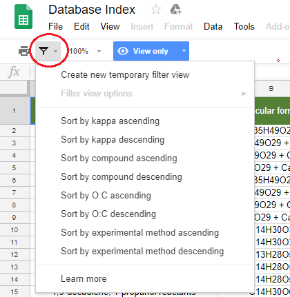
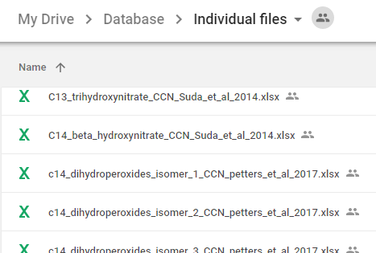
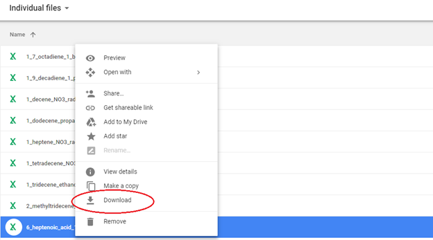
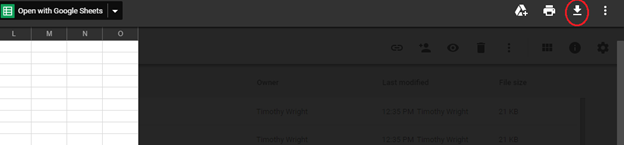
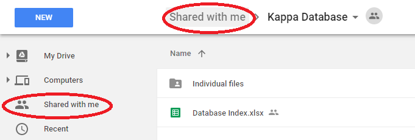
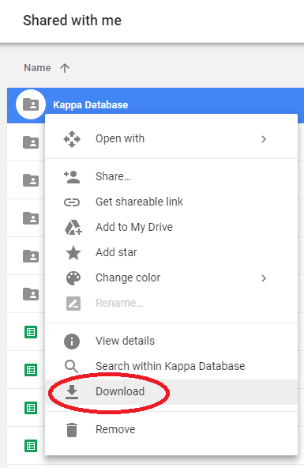

Introduction
How to use
Submit new kappa
Database structure
To view the root folder for the database, follow this link.
The database consists of two parts:
- Master database index file
- Individual material/experiment files
Master database
The master database index file contains summary information for each compound that includes:
- Compound name - Common name of compound or constituents that make up resulting aerosol
- Molecular formula - Simple molecular formula
- CAS number - Optional Chemical Abstracts Service (CAS) assigned number of primary compound(s) in aerosol
- Density - Density of aerosol compound if known
- Experimental method - Method to determine kappa, either via CCN, HTDMA, or EB
- Measurement temperature - Temperature at which experiment was performed at
- Average kappa - The representative kappa for the experiment
- Error - The uncertainty in the above kappa measurement if known
- O:C - Oxygen to carbon ratio for final compound (if known)
- Citation, DOI, PI contact email - Published details from which the data for the entry is drawn
- Detailed file - See below
The master database index can be sorted by:
- kappa
- Compound name
- O:C ratio
- Experimental method
These sort filters can be found by clicking the down arrow next to the filter icon as indicated below.

Individual experiment files
Included for each entry in the master database file is a reference to an individual file with further details on the data that went into generating the reported kappa observation.
These files are located in the Individual files folder
found in the root folder.

Downloading individual files
Files can be previewed by clicking on the individual file and using the document preview system.
Individual experiment files can be downloaded from the Individual files directory by either right clicking on the file and choosing download or

from the file preview press the download button.

Downloading all files
To download the entire database, including the master index and all individual files:
- Go to the
root folder and click on "Shared with me"

- Right click on the "Kappa Database" folder and choose Download

This database was made possible via grant support from the US Department of Energy Atmospheric System Research program (Grant DE-SC 0012043) and funds from the UK Natural Environment Research Council International Opportunity Fund program (Grant NE/N013700/1).